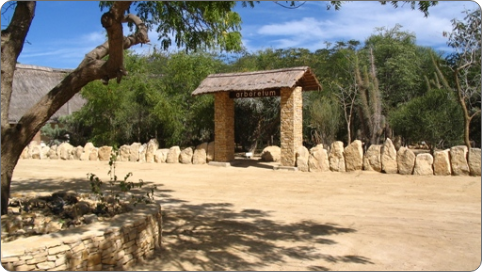
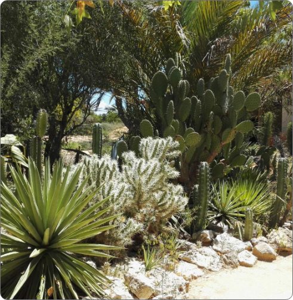
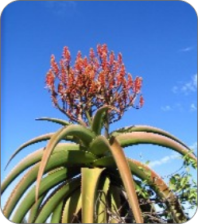
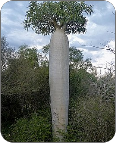
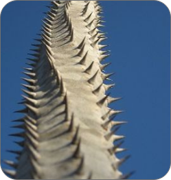
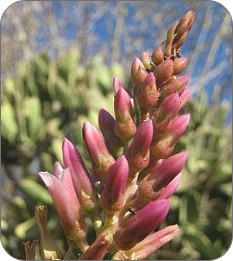
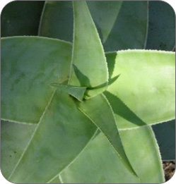
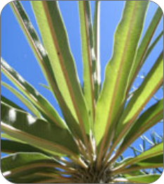

TOLIARA
TOLIARA
Toliara, appelée Tuléar en français, est la plus grande ville du sud de Madagascar.
C'est le chef-lieu de la région Asimo-Andrefana (Sud-Ouest) après avoir été celui de
la province de Toliara. Ce port est situé à 540 km de Fianarantsoa et à 951 km de la
capitale, Antananarivo,par la route nationale 7 (RN7). La population de son aire
urbaine était estimée en 2014 à plus de 250 000 habitans. Elles s'étend au bord du
canal de Mozambique et à proximité du Tropique du Capricorne.

L'Arboretum d'ANTSOKAY
Hermann PETIGNAT, par l'achat de plusieurs parcelles de terrains très pauvres constitués
par des marnes calcaires et de sables roux décalcifiés. L'Arboretum est situé à 12 km au
sud-est de la ville de Toliara, à 2 km au nord du Tropique du Capricorne et à 3 km des
eaux du Canal de Mozambique, Antsokay désigne un petit hameau tout proche où se trouvent
des pierres calcaires qui servent à fabriquer de la chaux vive.
Sur une superficie de 40 ha d'une haie végétale, l'initiateur a entrepris de faire se reproduire et multiplier soit par graine, bouture ou transplantation,
les espèces de plantes les plus menacées ceci afin de préserver le plus grand nombre de la déforestation constante, des feux de brousse et des pillards.
L'étude, l'identification et le cas échéant leur description en sont, pour le mieux assurées et c'est d'ailleurs au cours de nombreuses prospection en brousse
que H.Ptignat et son équipe ont pu découvrir et décrire de nouvelles espèces.
Qu'est qu'on peut découvrir dans l'Arboretum d'Antsokay ?
Du côté flore, voici quelques plantations qu'on pourra y trouver.
Il y en a encore plus… partir à la découverte des autres ?

Parc_de_l'Arboretum

Différentes_plantations

Aloe_vaombe

Pachypodium

Alluaudia_procera

Kalanchoe_grandidieri

Aloe_viguieri
